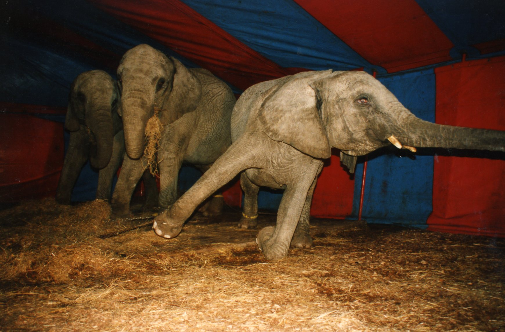

Circus Animals
The truth about animals in circuses is that they are abused and endure lives of complete misery, while some are even poached from the wild, purely for entertainment. Circuses around the world continue to use animals in their shows and very few countries have banned the practice.
In Vietnam, we’ve seen species which are protected by national and international law performing in circuses. This includes elephants and moon bears. Laws state that these species cannot be poached from the wild or sold for commercial purposes. We also know that no bear bile farmers in Vietnam were able to successfully breed captive bears – so where are the circus animals coming from? The truth is some are highly likely to have been illegally poached from the wild and sold into the entertainment industry.
In circuses, animals are made to perform unnatural tricks which no individual would willingly carry out. Elephants are made to stand on one leg and spin in circles – often while standing on top of small stools. These are actions elephants have never been observed carrying out in the wild precisely because they cause long-term damage to the animals’ physiology. It is well documented that elephants are forced to perform these actions by being beaten with bullhooks, while young elephants are savagely constrained and beaten in a process known as “the crush”, which breaks their spirit and forces them to comply.